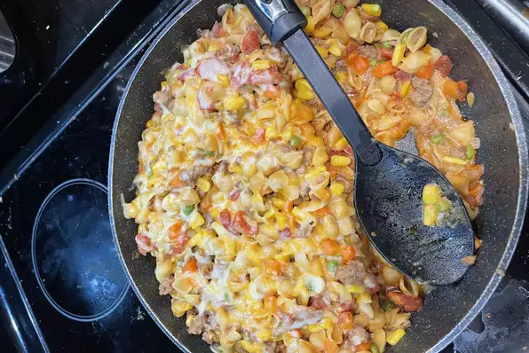

It might not be pretty, but it sure is easy and
tasty!
- 1 pound lean ground beef
- 1 can diced tomatoes
- 1 cup milk
- 1 cup shredded cheese
- Heat a large skillet over medium heat. Cook
beef for 5-7 minutes.
- Add ingredients. Stir and cook for about
12 minutes.
- Season with salt. Stir half of cheese
into the mix, put the other half on top.